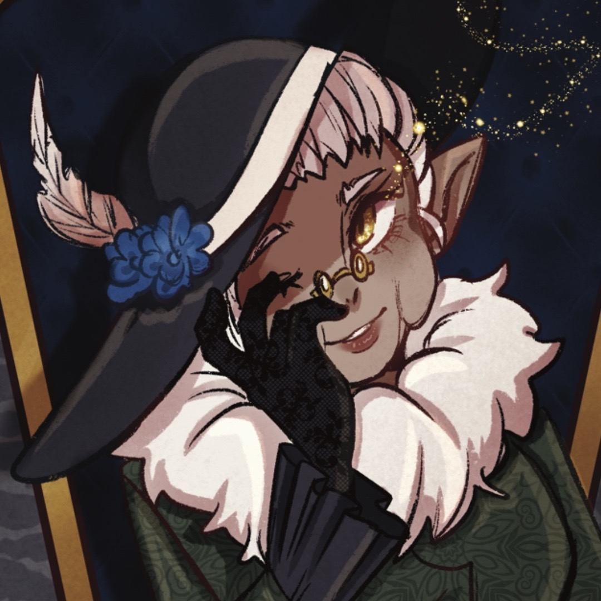

Madam Hawthorne is the golden of the old lady who lives in a shoe
"There was an old woman who lived in a shoe. She had so many children, she didn't know what to do.
She gave them some broth without any bread; And whipped them all soundly and put them to bed."
She is a rather strict and stern woman who is very powerful yet starting to get rather old...
Her hat is sentimental, Hazel has never seen her without it and he even finds it comfoting.
Madam Hwthorne is an intellectual who runs a info trading center, its why shes so known in the city.

Madam Hawthone is a Golden who came down to spread her story around, once she did she found Abbington who
became her belonging and soon she found a lover who would help her produce children for her lineage, its
never known what happened to the man, as he didnt seem to matter all that much to her, She loved her family
but one by one they were killed by someone with a grdge foe her, Hazel being the only one left.
Back to Top